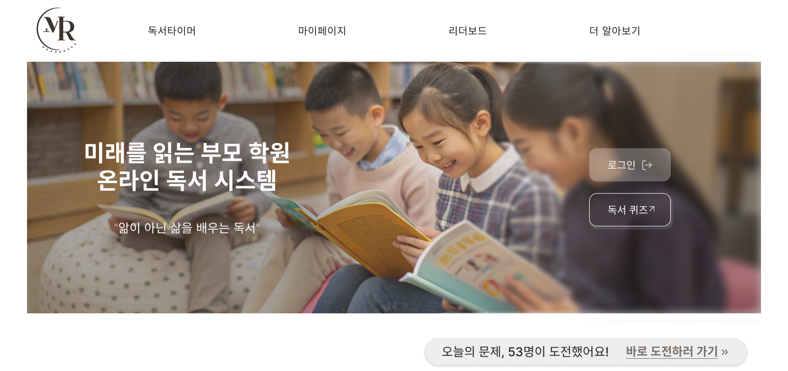
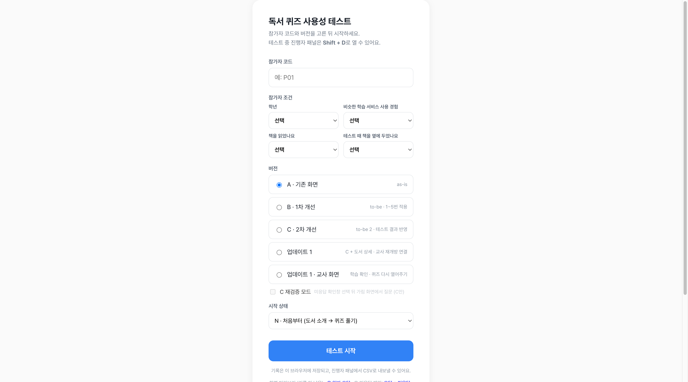
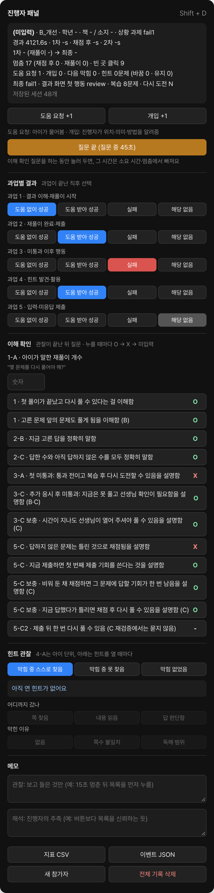

반복되는 출력과 채점
도서마다 다른 테스트지를 찾아 출력하고, 학생별 답안을 직접 채점해야 했습니다.
Service Planning · UI/UX · Dev Collaboration
제안으로 얻은 신뢰, 구현으로 이어진 기회
수작업으로 운영되던 독서 테스트와 재시험을 온라인화해, 학생의 독서 이해도를 누적 관리할 수 있도록 기획한 웹 서비스입니다. 책 선택부터 독서, 퀴즈, 오답 재풀이, 결과 기록까지 하나의 학습 흐름으로 연결했습니다.

01Opportunity
첫 제안이, 실제 서비스를 맡는 기회로 이어졌습니다
첫 번째 프로젝트 이후에도 학원에서 강사로 일하며 독서 테스트 운영을 맡았습니다. 그 발표를 계기로 기획과 디자인 역량을 인정받아, 학원에서 사용할 온라인 독서 프로그램 제작을 맡게 됐습니다.
저는 독서 테스트를 직접 담당하며 발견한 문제를 바탕으로 기능 기획, 사용자 흐름 설계, UI/UX 디자인과 인터랙티브 프로토타입 제작을 단독으로 담당하고, 유저 테스트를 진행했습니다. 이후 외부 개발자 한 명에게 화면별 요구사항과 동작 방식을 전달하고, 구현 결과를 검수하며 수정 사항을 조율했습니다.
첫 번째 프로젝트가 해결안을 제안한 경험이었다면, 이번에는 설계한 화면이 실제 웹 서비스로 구현되는 과정까지 맡았습니다.
02Problem
학생이 늘어날수록 채점과 재시험 관리가 어려워졌습니다
학생이 책을 고르면 선생님은 해당 테스트지를 찾아 출력하고, 답안을 직접 채점한 뒤 오답 수정이나 재시험을 안내했습니다.
당시 약 120종의 도서 테스트지를 종이로 보관했고, 하루 평균 40명의 학생이 테스트를 치렀습니다. 채점과 재시험 안내에만 매일 15분이 들었습니다.
학생 수가 늘어나자 여러 학생의 시험 진행 상태와 재시험 여부를 동시에 확인하기 어려워졌습니다. 그 결과 책의 내용을 제대로 이해했는지보다, 문제를 풀었다는 사실과 결과만 확인하는 방식으로 운영되고 있었습니다.
도서마다 다른 테스트지를 찾아 출력하고, 학생별 답안을 직접 채점해야 했습니다.
오답 수정과 재시험 여부가 시험지와 선생님의 기억에 의존해 후속 확인이 누락될 수 있었습니다.
시험지는 보관됐지만, 학생별 독서 이력과 이해도를 연속적으로 확인하기 어려웠습니다.
문제는 종이 시험지 자체가 아니라, 학생의 독서 과정과 이해도를 끝까지 관리할 수 없다는 점이었습니다.
03Original service
학생은 읽은 책을 고르고 문제를 풀며, 선생님은 학생별 기록을 확인합니다. 추가로 학부모가 아이의 독서 현황을 살펴보는 기능도 함께 구성했습니다.
문제 풀이, 자동 채점과 재풀이, 개인 독서 기록
학생별 도서·점수·진행 현황을 한곳에서 확인
리더보드를 활용해 독서 참여 독려
누적 독서량과 개인 기록 확인.
도서 찾기
독서 퀴즈를 시작하려면 먼저 읽은 책을 찾아야 했습니다. 하지만 어린 학생에게는 책 제목을 정확히 기억해 검색어로 입력하는 과정 자체가 퀴즈를 시작하기 전의 진입 장벽이 될 수 있다고 판단했습니다. 오타가 나거나 제목 일부만 기억하면 원하는 책을 찾지 못하고 다시 선생님에게 도움을 요청해야 했습니다.
그래서 검색창만 제공하는 대신, 학생이 자신의 학년을 선택한 뒤 책 표지를 보며 읽은 책을 찾는 탐색 흐름을 함께 설계했습니다.
첫 문제 풀이
기존에는 선생님이 시험지를 직접 채점하고, 학생마다 틀린 문제를 확인해 다시 풀도록 안내해야 했습니다. 학생 수가 많아질수록 재시험 여부와 오답 수정 상태를 끝까지 확인하기 어려웠습니다.
이를 해결하기 위해 객관식과 주관식으로 구성된 온라인 퀴즈를 설계하고, 제출 후에는 틀린 문제만 다시 풀 수 있도록 했습니다. 헷갈리는 문제에는 정답의 내용이 있는 책의 페이지를 간단한 힌트로 제공해, 학생이 책의 내용을 다시 학습하며 떠올리도록 유도했습니다.
마이페이지에서는 쌓인 독서 기록을 확인하고, 리더보드에서는 다른 학생들과 독서 성과를 비교할 수 있도록 구성했습니다.
마이페이지
기존에는 시험지를 보관하더라도 학생이 지금까지 어떤 책을 읽었고, 얼마나 이해했는지를 한눈에 확인하기 어려웠습니다. 개별 시험 결과는 남았지만, 학생의 독서 활동이 하나의 기록으로 이어지지는 않았습니다.
그래서 마이페이지에 누적 독서 권수, 퀴즈 평균 점수, 월별 독서량, 통과율과 도서별 결과를 함께 보여주도록 구성했습니다. 학생은 자신의 독서량과 성취를 확인하고, 학부모는 자녀의 독서 활동을 확인할 수 있습니다.
리더보드
기록이 쌓여도 다시 들어올 이유가 없으면 사용이 이어지지 않는다고 판단했습니다. 그래서 독서량과 퀴즈 성과를 비교하고, 보상으로 이어지는 리더보드를 구성했습니다.
직영관별 누적 독서 권수를 비교해 선의의 경쟁을 유도하고, 우수한 관에는 매달 상품을 제공했습니다. 개인별 랭킹에서는 독서 권수와 퀴즈 정답률을 함께 보여주어, 독서량뿐 아니라 이해도까지 함께 고려해 참여를 유도했습니다.
04Problem
출력과 채점은 자동화했지만, 사용 방법을 안내하는 일은 남아 있었습니다.
처음에는 아이들이 문제에 집중할 수 있도록 장식과 복잡한 구성을 줄였습니다. 여러 시안을 선생님들과 비교하며 깔끔하고 단순한 구성을 선택했습니다. 하지만 화면을 단순하게 만드는 것과, 아이가 규칙을 이해하고 혼자 사용하는 것은 다른 문제였습니다. 초기 설계에서는 아이의 실제 행동을 충분히 확인하지 못했습니다.
집중장식을 줄여 문제에 집중할 수 있는가
발견아이가 필요한 버튼을 스스로 찾는가
정돈정보가 깔끔하게 정리되어 있는가
이해숫자와 표시가 무엇을 뜻하는지 아는가
단순함선생님이 보기에 구성이 단순한가
혼자 사용하기선생님이 알려주지 않아도, 다음에 무엇을 해야 하는지 아는가
실제 사용 과정에서는 버튼을 찾거나, 채점 결과를 이해하고 다시 푸는 과정에서 선생님의 안내가 필요했습니다. 회의에서 나온 이야기를 바탕으로 반복해서 도움이 필요했던 순간을 살펴봤습니다.
당시 회의에서 나온 선생님들의 이야기
“어떤 문제를 틀렸고, 이해가 부족한 부분이 어딘 지 다시 찾아보며 확인하기 어려워요.”
“문제를 빼먹고 제출을 하는 실수가 가장 많아요.”
“책을 보면서 풀 수 있도록 해도, 프로그램 내 힌트 버튼을 못 찾아서 꼭 처음 테스트를 보는 아이들에게는 설명이 필요해요. 힌트 위치라던가, 횟수 제한이 있는지 등..”
“테스트 제출 후 다시 풀어보고 통과할 수 있는데, 한번만 풀어보고 어떻게 하냐며 불러요.”
출처: 2024.07.18 독서 프로그램 회의록 · ‘실제 발화’ 항목
반복해서 도움이 필요했던 상황은 강사에게 듣고, 아이들이 화면을 어떻게 사용하고 이해하는지는 사용성 테스트로 확인했습니다.
화면을 단순하게 만드는 데서 나아가, 아이가 이해하고 스스로 사용할 수 있는지 확인해야 했습니다.
05Define
아이들이 혼자 진행하기 어려웠던 다섯 지점에 집중했습니다
아이들이 스스로 이해하고
끝까지 사용할 수 있는 독서 테스트 경험
운영 회의에서 선생님들이 반복해서 안내했던 상황을 모았습니다. 이후 기존 화면을 살펴보며, 아이가 필요한 정보를 찾거나 다음에 무엇을 해야 할지 알기 어려운 지점을 정리했습니다.
채점 후 틀린 문제를 찾기 어려움
강사 의견 · 화면 검토무엇을 얼마나 틀렸는지 바로 알기
다시 풀 화면에서 수정할 대상을 구분하기 어려움
화면 검토고칠 문제와 답을 바꾸는 방법 알기
통과하지 못한 뒤 어떻게 해야 할지 모름
강사 의견 · 화면 검토다음에 할 일과 재도전 조건 알기
힌트 버튼을 찾지 못해 선생님에게 물음
강사 의견 · 화면 검토힌트를 찾아 책에서 확인하기
문제를 빠뜨리고 채점함
강사 의견 · 화면 검토빈 문제를 확인하고 채점 결과를 알고 선택하기
독서보다 통과와 보상에 집중하는 행동도 제기됐습니다. 우선 테스트 과정의 이해와 재도전 정책을 개선하고, 랭킹 기준은 후속 과제로 남겼습니다.
다섯 지점마다 아이가 알아야 할 정보와 해야 할 행동을 정하고, 화면과 흐름을 다시 설계했습니다. 화면을 바꾸는 데서 그치지 않고, 아이가 도움 없이 진행하고 규칙을 이해하는지 확인하고자 했습니다. 각 문제에 가설과 관찰 기준을 정하고, 개선안을 사용성 테스트로 검증했습니다.
| 우선순위·문제 | 핵심 가설 | 확인할 행동 |
|---|---|---|
| 01 · 결과 파악 채점 후 무엇을 얼마나 틀렸는지 찾기 어려움 | 개수 요약과 바로가기가 있으면 재풀이 대상을 알고 진입할 것이다. | 대상 개수 설명, 도움 없는 재풀이 진입 |
| 02 · 답 수정 맞은 문제와 재풀이 대상이 섞여 있음 | 수정이 필요한 대상만 보여주고 이전 답·현재 답을 구분하면 수정 방법을 알 것이다. | 현재 답 이해, 막힘·도움 요청, 응답 현황 설명 |
| 03 · 미통과 이후 재도전 안내와 실제 경로가 어긋남 | 상태·다음 행동·조건이 이어지면 다음 학습을 스스로 시작할 것이다. | 정책 설명과 독립 진입을 별도 확인 |
| 04 · 힌트 작은 아이콘과 쪽수의 의미를 알아야 함 | 힌트 버튼과 찾아볼 쪽수를 명확히 안내하면, 아이가 힌트를 찾아 책의 해당 부분을 다시 읽고 답을 고를 수 있을 것이다. | 도움 없이 힌트 버튼 찾기, 안내된 쪽을 찾아 읽기, 책에서 읽은 내용을 바탕으로 답 고르기 |
| 05 · 입력·미응답 답하지 않은 문제가 있는지, 그대로 채점하면 어떻게 되는지 알기 어려움 | 답한 문제와 답하지 않은 문제를 구분하고 채점 시 적용되는 규칙을 안내하면, 미응답은 오답으로 처리되고 첫 풀이 기회를 사용한다는 것을 알고 채점 여부를 결정할 것이다. | 원하는 답을 선택·입력하기, 답하지 않은 문제 찾기, 미응답의 오답 처리와 첫 풀이 기회 사용을 각각 설명하기 |
답하지 않고 채점하면 어떻게 되는지 알려주기
답하지 않은 문제는 틀린 것으로 채점되고 첫 풀이 기회를 사용한다는 점을 안내한 뒤, 돌아가서 답할지 그대로 채점할지 선택하게 합니다.
몇 번째 문제인지와 몇 개 답했는지 구분하기
지금 보고 있는 문제의 순서와, 답한 문제 수·남은 문제 수를 구분해 보여줍니다.
오답만 고치는 것과 처음부터 푸는 것 구분하기
틀리거나 답하지 않은 문제를 고칠 때는 ‘다시 풀기’, 20문제 전체에 새로 도전할 때는 ‘새로 풀기’라고 안내합니다.
익숙한 화면 안에서 필요한 정보 바꾸기
기존의 하늘색 버튼·회색 배경·흰 카드는 유지하고, 안내 문구와 정보 배치, 풀이 흐름을 개선합니다.
화면 안내와 함께 재도전 규칙도 바꿨습니다. 첫 번째 도전에서 통과하지 못하면 책으로 복습한 뒤 한 번 더 도전하고, 두 번째에도 통과하지 못하면 선생님이 확인한 뒤 퀴즈를 열어 주도록 설계했습니다.
06Design B
아이들이 다음에 무엇을 해야 할지 알 수 있도록, 필요한 정보를 알맞은 순간에 보여줬습니다.
개선된 다섯 곳은 같은 시각 언어 안에서 정보의 순서·문구·조작 범위를 바꾸는 데 집중했습니다. 아래 A/B 화면은 코드 프로토타입 캡처입니다. 실제 운영 배포 화면과는 구분합니다.
개선 01 · 채점 결과 파악
기존에는 채점 후 위로 올라가며 빨간 문항을 찾고, 다시 풀 문제 수를 직접 세어야 했습니다. 개수 요약과 시작 버튼을 함께 보여주면, 아이가 분량을 알고 도움 없이 재풀이를 시작할 수 있을 것이라고 생각했습니다.
아이가 직접 찾아야 했던 결과
헤더를 포함한 기존 채점 결과 화면입니다. 나머지 문항의 결과는 스크롤하며 확인해야 했습니다.
화면에서 바로 읽을 수 있는 결과
색을 찾아 세지 않아도,
다시 풀 문제 수를 알게
개수가 적힌 버튼으로
바로 재풀이에 진입
먼저 풀 문항을 선택해도
남은 대상까지 모두 연결
B는 답하지 않은 1문제와 틀린 3문제를 포함한 채점 결과입니다. A와 B는 서로 다른 예시 상태로 화면 구조를 비교했습니다.
아이가 다시 풀 문제 수를 알고,
도움 없이 시작할 수 있을까?
기존에는 문항 번호의 색을 보고 틀린 문제를 찾아야 했습니다. 색을 찾아 개수를 세는 과정을 줄이기 위해 맞힌 수와 다시 풀 문제 수를 한곳에 모았습니다. 숫자에는 ‘맞혔어요’, ‘다시 풀어야 해요’를 함께 적어 의미를 구분했습니다.
답하지 않은 문제도 다시 풀어야 하지만, 잘못 답한 문제와 같은 상태는 아닙니다. 전체 재풀이 수에는 함께 포함하고, 목록에서는 미응답과 오답을 나눠 왜 다시 풀어야 하는지 알 수 있도록 했습니다.
요약만 보여주면 다시 시작할 경로를 찾아야 합니다. 그래서 다시 풀 개수가 적힌 시작 버튼을 요약 바로 아래에 두었습니다. 목록에서는 원하는 문항부터 시작할 수 있게 하되, 어느 문제를 골라도 나머지 재풀이 대상까지 모두 이어서 풀도록 연결했습니다.
개선 02 · 재풀이 대상과 답 수정
기존에는 맞은 문제와 틀린 문제가 한 화면에 섞여 있고, 이전 답도 남아 있어 무엇을 고쳐야 하는지 판단해야 했습니다. 다시 풀 문제만 보여주고 이전 답과 이번 선택을 구분하면, 아이가 수정할 대상을 알고 답을 바꿀 수 있을 것이라고 생각했습니다.
어떤 문제와 답을 고칠지 직접 찾아야 했던 화면
맞은 문항도 같은 목록에 남아 있어, 다시 풀 대상을 화면에서 직접 구분해야 했습니다.
답할 문제에 집중하는 화면
답하지 않은 문제에 새로 답하기
맞은 문제는 제외하고, 지금 답할 문제에 집중하도록
이전 답에는 라벨을 붙이고, 이번 응답은 새로 선택하도록
응답한 개수와 지금 보는 문제의 순서를 각각 안내
B는 답하지 않았던 20번 문제의 재풀이 화면입니다. 화살표로 입력 화면과 문제 목록을 펼친 화면을 비교할 수 있습니다. 이전 답의 라벨은 객관식 문항에서 사용합니다.
아이가 이번에 고른 답을 알고,
답한 수와 남은 수를 설명할 수 있을까?
전체 문항을 유지하면 앞선 풀이를 살펴볼 수 있지만, 고칠 대상을 계속 구분해야 합니다. 재풀이에서는 틀리거나 답하지 않은 문제만 한 문제씩 보여주는 방식을 선택했습니다. 다른 대상은 ‘다시 풀 문제 목록’에서 이동할 수 있도록 했습니다.
이전 답을 없애면 무엇을 골랐는지 기억해야 하고, 그대로 선택해 두면 이미 수정했다고 오해할 수 있습니다. 그래서 이전 답은 라벨로 남기고, 이번 답은 새로 선택하도록 구분했습니다. 이전과 같은 보기를 다시 고르는 것도 이번 응답으로 처리했습니다.
결과 목록에서 뒤쪽 문제를 선택해도 앞의 문제가 빠지지 않아야 합니다. 어느 문항에서 시작하든 재풀이 대상 전체를 이어서 풀도록 연결했습니다. 현재 순번과 답한 수는 별도로 표시하고, 아이가 두 정보를 구분하는지는 테스트에서 확인하고자 했습니다.
개선 03 · 미통과 이후 안내
기존 화면은 ‘다시 도전해보세요!’라고 안내했지만, 재도전 버튼은 없었습니다. 나가서 다시 퀴즈를 찾는 경로도 아이가 알아내야 했습니다. 결과와 다음 행동, 재도전 조건을 함께 안내하면 혼자 다음 학습을 시작할 수 있을 것이라고 생각했습니다.
재도전 안내와 실제 경로가 달랐던 화면
재응시는 가능했지만 결과 화면에서 직접 시작할 수 없고, 나가기와 도서 선택을 거쳐야 했습니다.
결과에서 복습과 다음 도전으로 이어지는 화면
미통과 결과에서 책으로 복습하기
점수와 통과 기준으로 현재 결과를 확인
틀린 문제를 책에서 살펴보는 행동으로 연결
첫 미통과와 두 번째 미통과의 후속 절차 구분
B의 첫 미통과 결과 → 책으로 복습하기 → 추가 도전 안내를 화살표로 넘겨볼 수 있습니다. 두 번째 미통과 뒤에는 선생님 확인이 필요하도록 정책을 구분했습니다.
아이가 지금 할 일과 다시 도전할 조건을 알고,
도움 없이 다음 행동을 시작할 수 있을까?
계속 시도하는 것만으로 통과하지 않도록, 첫 미통과 뒤에는 틀린 내용을 책에서 복습한 후 두 번째 도전으로 이어지게 했습니다. 복습 화면을 넘긴 기록만으로 실제 이해가 완료됐다고 보지는 않았습니다.
자동으로 시도를 계속 주는 대신 선생님이 책의 내용을 함께 확인하고 퀴즈를 열어 주도록 정책을 정했습니다. 학생에게 조건을 안내하는 것과 교사가 실제로 조치하는 기능은 함께 연결해야 했습니다.
도움 없이 다음 행동을 시작하는지 관찰하고, 재도전 조건은 아이의 말로 설명하게 했습니다.
개선 04 · 힌트 발견과 활용
기존에는 말풍선 아이콘이 힌트라는 것과 쪽수 표시의 의미를 알아야 했습니다. 학원에서 책을 찾아 다시 읽도록 지도하는 방식은 유지하되, 힌트 버튼과 찾아볼 쪽수를 명확히 안내하면 아이가 책에서 내용을 확인하고 답을 고를 수 있을 것이라고 생각했습니다.
아이콘의 의미를 알아야 했던 힌트
말풍선이 힌트라는 것을 알아야 눌러볼 수 있었습니다.
무엇을 하는 버튼인지 글자로 안내
책 14쪽을 찾아보세요
그 부분을 읽고, 답을 다시 생각해 보세요.
‘힌트 보기’를 직접 눌러보세요.
책을 다시 읽는 학습 방식은 유지하고, 어디를 펼쳐 무엇을 해야 하는지 안내했습니다.
To-be는 힌트를 열고 닫는 동작을 직접 확인할 수 있도록 구성했습니다. ‘원본 크게 보기’에서 실제 화면 자료를 볼 수 있습니다.
아이가 도움 없이 힌트를 찾고,
안내된 쪽을 읽어 답의 근거를 찾을 수 있을까?
아이들은 실제 책을 옆에 두고 테스트하며, 학원에서도 책을 다시 읽도록 지도했습니다. 그래서 책에서 근거를 찾아보는 학습 방식은 유지하고, 화면에서 힌트의 위치와 의미를 명확히 하는 데 집중했습니다.
아이콘의 의미를 추측하게 하기보다 ‘힌트 보기’라는 행동 이름과 찾아볼 쪽수를 함께 안내했습니다. 힌트를 여는 것과 실제로 책을 찾아 읽는 것은 다른 행동으로 관찰하도록 했습니다.
안내 쪽수가 판본과 다르면 아이가 제대로 행동해도 실패합니다. 쪽수의 정확성을 준비 조건으로 두고, 콘텐츠 오류와 아이의 사용 어려움을 분리해 해석하도록 했습니다.
개선 05 · 입력과 미응답 채점
기존에는 단일 선택에 체크박스를 사용하고, 답한 수와 답하지 않은 문항을 채점 전에 파악하기 어려웠습니다. 입력 상태와 미응답 문항, 그대로 채점할 때의 결과를 알려주면 아이가 알고 선택할 수 있을 것이라고 생각했습니다.
답한 상태와 빠뜨린 문제를 직접 확인해야 했던 화면
보유 원본은 첫 풀이의 상단·하단 두 장면을 이어 놓은 자료입니다.
답하지 않은 문항과 선택의 결과를 안내하는 화면
보기 전체를 누르고 풀이 현황을 확인하도록
빠뜨린 문제를 채점 전에 찾을 수 있도록
미응답의 오답 처리와 남은 재풀이 기회를 설명
B는 미응답 1개가 있는 확인창입니다. 첫 풀이 입력 상태와 채점 직전 안내를 함께 개선한 사례입니다.
아이가 답하지 않은 문제를 찾고,
그대로 채점할 때의 결과를 이해할 수 있을까?
무조건 막는 대신 돌아가서 답하거나 그대로 채점하는 선택을 유지했습니다. 선택 전에 어떤 문제가 남았고 무엇이 달라지는지 안내하는 것이 목표였습니다.
답하지 않은 문제는 틀린 것으로 채점되고, 미응답 제출도 첫 풀이 기회를 사용합니다. 다시 풀 수 있다는 안내만 보고 그냥 제출해도 된다고 해석하지 않는지 확인할 필요가 있었습니다.
선택한 버튼과 두 규칙에 대한 설명을 각각 기록했습니다. 확인된 혼란은 다음 테스트 결과와 C 개선에서 다룹니다.
07Test A / B
다섯 개선안을 코드 프로토타입으로 구현하고, 학생 10명에게 버전별 사용성 테스트를 진행했습니다.
같은 문제의 답을 기억하는 영향을 피하려고, 한 아이에게 한 버전만 보여줬습니다.
직접 문제를 푸는 과정과, 미응답·미통과 상태에서의 대응을 나눠 확인했습니다.
도움 없이 진행하는지 관찰한 뒤, 숫자와 규칙의 의미를 아이의 말로 설명하게 했습니다.
테스트 준비와 관찰 기록
참가 조건을 남기고, 버전과 과제 시작 상태를 선택했습니다.

지표 CSV와 이벤트 JSON으로 내보내어 바로 테스트 결과를 확인할 수 있도록 했습니다.

패널의 선택값·O/X·시간·건수는 기록 방법을 보여주기 위한 예시이며, 실제 참가자의 테스트 결과가 아닙니다.
처음부터 푸는 N에서는 결과 확인·재풀이·힌트 사용을 관찰했습니다. 첫 미통과 F1과 미응답 U는 정해진 상황에서 시작했습니다. 자연 과제에서 재풀이가 발생하지 않은 경우의 보충 R은 별도로 기록하고, 자연 과업의 표본처럼 합치지 않았습니다.
아이의 도움 요청과 진행자의 개입을 따로 남겼습니다. 개수·현재 답·남은 분량·재도전 규칙은 관찰 후 질문으로 확인했습니다. 질문하는 동안의 시간은 수행 시간과 구분하고, 아이가 책을 읽거나 생각하는 시간은 제외하지 않았습니다.
가설별 관찰 항목과 판정 기준을 정한 뒤 테스트했습니다. 화면에서 막히거나 잘못 이해한 결과도 실패로 포함했습니다. 기술 문제·피로 중단 등으로 측정하지 못한 항목은 사유를 남겨 분리하고, 중단 전에 확인한 유효 결과는 유지했습니다. 과제별 조건과 측정 여부에 따라 분모가 다릅니다.
테스트에서 확인한 변화
과제별 분석 조건을 충족한 사례의 성공 인원과 측정 인원을 함께 표시했습니다.
| 관찰 지표 | A | B | 판단 |
|---|---|---|---|
| 재풀이 개수 정확히 설명 | 1/3 | 3/3 | 개수 파악에 개선 신호 |
| 도움 없이 재풀이 진입 | 1/3 | 3/3 | 진입 경로에 개선 신호 |
| 현재 고른 답 이해 | 2/3 | 3/3 | 사전 차이 기준에는 미달 |
| 답한 수·남은 수 이해 | 1/3 | 2/3 | B 목표 미달 → C 재개선 |
| 첫 미통과 후 정책 이해 | 1/3 | 3/4 | B 목표 미달 → C 재개선 |
| 미응답 두 규칙 모두 이해 | 사후 이해·별도 해석 | 2/4 | B 목표 미달 → C 재개선 |
B의 사용성 목표는 유효 측정 인원의 80% 이상 성공입니다. 3명이면 3명, 4명이면 4명, 5명이면 4명 이상이 필요합니다. A 대비 비교 기준은 성공률 40%p 이상 증가로 별도 판단했습니다. 예를 들어 2/3 → 3/3은 B 목표는 충족하지만, 차이가 약 33%p여서 비교 기준에는 못 미칩니다. 비교는 같은 과제·측정·노출 조건의 유효 대상이 각 3명 이상일 때만 적용하며, 미응답 규칙 이해는 B 내부 목표로 판단했습니다. 이는 소규모 테스트의 의사결정 기준이며 통계적 유의성을 뜻하지 않습니다.
과제별 기록이 어떤 형태로 남는지 보여주는 A/B CSV 원본 일부입니다. 아래 값은 집계표가 아니라 개별 과제 기록이며, 읽기 쉽도록 일부 열과 행만 발췌했습니다.
| 행 | participant | version | scenario | task1 | check_progress_ok | note_observed |
|---|---|---|---|---|---|---|
| 2 | A01-N | A_기존 | 도움 받아 성공 | X | 채점 후 38초 동안 위아래로 스크롤하며 "이제 뭐 해요?" 질문. 하단 다시풀기 버튼 위치 안내 후 진입. 다시 풀 개수를 4라고 답함(실제 6, 빈칸 2개를 셈에 넣지 않음). 빨간 글씨 보기를 "지금 고른 답"이라고 말함. 19번에서 "모르겠어요" 후 말풍선 아이콘을 보지 못하고 빈칸으로 둔 채 제출. | |
| 3 | A01-F1 | A_기존 | fail1 | 결과 카드의 "다시 도전해보세요!"를 읽고 홈으로 클릭. 종료 화면이 뜨자 "어? 다시 풀려고 했는데"라고 말함. "홈 가면 다시 할 수 있는 줄 알았어요." | ||
| 28 | B03-U | B_개선 | unanswered | 확인창을 읽고 바로 이대로 제출. "틀린 걸로 된대요." 첫 기회는 "다시 풀기 있으니까 상관없어요." | ||
| 34 | B05-N | B_개선 | 도움 없이 성공 | X | 확인창에서 돌아가 3번은 채웠지만 20번(주관식)은 "못 쓰겠어요" 하고 이대로 제출. 결과 화면에서 "이거 다 해야 해요?" 질문(대답 없이 관찰) 후 큰 버튼. 진행 질문에 "1개 했고 6개 남았어요"(실제 5개 남음). 10번 힌트 쪽이 책과 1쪽 어긋나 앞뒤로 넘겨 찾음. 목록을 한 번 열어 봄. | |
| 35 | B05-F1 | B_개선 | fail1 | 결과 화면 31초 정지, "통과한 거예요?" 질문. "제목을 다시 읽어볼래?" 안내 후 복습하기. 3-A 질문에 "다시 풀어야 해요"까지만 말함(방법 없음). | ||
| 29 | B03-F2 | B_개선 | fail2 | 복습을 끝까지 넘긴 뒤 "다시 시작하기 버튼이 없네요, 나중에 생기겠죠?" — 선생님 확인 필요를 말하지 못함. 중립 확인 후에도 "그냥 기다리면 돼요." |
원본 필드명과 기록을 유지했습니다. 긴 관찰 메모는 셀에 마우스를 올리면 확인할 수 있습니다.
다음 설계로 이어진 발견버튼을 찾아 누를 수 있어도, 지금 상태와 선택의 결과를 정확히 이해했다고 볼 수는 없었습니다.
숫자 뒤에 남아 있던 아이들의 혼란
“1개 했고 6개 남았어요”
실제로는 1개에 답했고 5개가 남아 있었습니다. 답한 수와 남은 수를 구분하는 표시를 다시 검토했습니다.
“다시 풀기 있으니까 상관없어요.”
미응답의 오답 처리는 설명했지만, 첫 풀이 기회 사용에 대해서는 이렇게 답했습니다. 다시 풀 수 있다는 안내만으로 선택의 차이가 전달되는지 살펴봤습니다.
“통과한 거예요?”
미통과 결과 화면을 본 뒤 통과 여부를 물었습니다. 제목과 점수만으로 현재 상태를 이해할 수 있는지 다시 살펴봤습니다.
“그냥 기다리면 돼요.”
선생님 확인이 필요하다는 조건을 설명하지 못했습니다. 시간이 지나면 다시 풀 수 있다고 생각하는 오해가 남았습니다.
출처: A/B 테스트 CSV의 note_observed · 각 과제의 실제 발화와 관찰 기록
표는 완독 조건과 과업별 유효 사례를 적용한 잠정 분석입니다. 참가자는 총 10명이며, CSV의 36세션을 36명으로 세지 않습니다. 일부 코드 대응·이전 화면 노출·원관찰 기록은 추가 대조가 필요합니다.
자연 풀이에서는 완독 조건을 충족한 A/B 각 4명 중 만점으로 재풀이가 발생하지 않은 1명씩을 제외해, 재풀이 지표의 분모는 각 3명입니다. 첫 미통과 후 이해 질문에서는 A 1명이 피로로 중단해 질문하지 못했으므로 해당 항목만 미측정으로 분리했습니다. 중단 전의 유효 기록은 유지했으며, 완독 조건을 적용한 정책 이해 지표의 분모는 A 3명·B 4명입니다. 힌트 발견은 B 유효 기회가 2건이라 최소 인원 조건에 못 미쳤고, 실제 쪽수 오류가 있던 책 근거 활용은 별도로 보류했습니다. 시간 감소율·독해력 향상·학원 업무 감소로 확대하지 않습니다.
08Design C
첫 개선에서 남은 세 문제를 두 번째 개선안 C로 수정했습니다.
기존 색과 카드 구조를 유지하며, 테스트에서 남은 혼란 세 가지에 집중했습니다.
재개선 01 · 미응답 채점
B에서는 “다시 풀기 있으니까 상관없어요”라는 반응이 남았습니다. 규칙을 한곳에 모으기보다, 각 버튼 아래에 선택의 결과를 붙였습니다.
규칙을 읽고 선택의 차이를 알아야 했던 확인창
오답 처리와 다시 풀기 규칙이 버튼 위에 모여 있었습니다.
“다시 풀기 있으니까 상관없어요”라는 반응이 남았습니다.
지금 답할 때와 비워 둘 때의 차이를 더 분명히 보여줄 필요가 있었습니다.
각 버튼 아래에서 선택의 결과를 비교하는 확인창
채점하면 첫 풀이가 끝난다는 사실을 먼저 안내
지금 답해 보고, 틀리면 채점 후 한 번 더 풀 수 있음을 설명
오답으로 처리되며 답할 기회가 한 번 남음을 설명
재개선 02 · 재풀이 진행률
B에서는 답한 수와 남은 수를 잘못 짝지어 읽는 사례가 있었습니다. 응답 현황을 가장 큰 문장으로 보여주고, 현재 순번은 보조 정보로 내렸습니다.
현재 순번이 응답 현황보다 크게 보이는 화면
몇 번째 문제인지가 응답 현황보다 먼저 눈에 들어왔습니다.
현재 위치와 답한 수를 서로 다른 곳에서 읽어야 했습니다.
답한 수와 남은 수를 잘못 짝지어 읽는 반응이 있었습니다.
얼마나 답했고 얼마나 남았는지 먼저 읽는 화면
답한 수와 남은 수를 나란히, 가장 크게 표시
지금 몇 번째 문제를 보는지는 아래에 보조 정보로 표시
문제를 다시 보거나 답을 바꿔도 중복으로 늘어나지 않게 유지
재개선 03 · 미통과 후 다음 행동
첫 미통과에서는 “통과한 거예요?”(B05-F1), 두 번째 미통과에서는 “그냥 기다리면 돼요”(B03-F2)라는 반응이 남았습니다. 두 상황에서 발견한 결과·다음 행동의 혼란을 함께 개선했으며, 아래에는 두 번째 미통과 화면을 대표로 비교했습니다.
점수와 안내에서 다음 행동을 파악해야 했던 결과
B05-F1: “통과한 거예요?” — 첫 미통과 화면에서 나온 발화입니다.
다시 시작하려면 선생님 확인이 필요하다는 안내가 분리돼 있었습니다.
B03-F2: “그냥 기다리면 돼요.” — 선생님 확인 조건을 설명하지 못했습니다.
통과까지의 차이와 선생님께 말씀드릴 일을 강조한 결과
통과까지 몇 문제가 더 필요했는지 진하게 표시
책을 다시 읽고 선생님께 결과를 말씀드리도록 안내
첫 도전은 복습 후 새로 풀기, 두 번째는 선생님 확인으로 연결
‘더 맞혔어요’라는 문장이 통과 오해를 만들었는지, 회색 상자가 안내를 놓치게 했는지는 원인 가설입니다. 관찰된 오해와 원인 해석을 구분했습니다. C의 재검증 결과는 다음 섹션에서 다룹니다.
09Test C
신규 학생 5명에게 세 변경 지점을 집중 재검증했습니다.
아이들에게 답하지 않은 문제가 남았을 때, 다시 풀 때, 첫 번째·두 번째 도전에서 통과하지 못했을 때의 화면을 차례로 보여줬습니다. 미응답 확인창에서 버튼을 고르면 다음 화면이 나오기 전에 화면을 가리고 질문했습니다. 결과 화면을 읽고 답하지 않도록 하고, 정답을 알려주지 않은 채 아이의 첫 답변을 기록했습니다.
답한 수와 남은 수를 정확히 설명
첫 미통과 후 다음 행동으로 진입
목표 4/5에 미달한 문제로 유지
사전 목표는 5명 중 4명 이상이었습니다. 주황색 박스는 이 기준에 못 미쳐 추가 개선이 필요한 항목입니다.
| 지표 | 성공 / 측정 | 판정 |
|---|---|---|
| 미응답은 오답 처리됨 | 5/5 | 달성 |
| 첫 풀이 종료·첫 기회 사용 | 4/5 | 입력 기준 달성 · 근거 발화 보완 |
| 미응답 핵심 두 조건 동시 이해 | 4/5 | 입력 기준 달성 · 근거 발화 보완 |
| 재풀이 답한 수·남은 수 | 5/5 | 달성 |
| 첫 미통과 후 정책 이해 | 4/5 | 달성 |
| 다음 학습 행동 독립 진입 | 5/5 | 달성 · 진입 후 개입은 별도 |
| 교사 재개방 조건 최초 이해 | 3/5 | 목표 미달 · 남은 문제 |
정정 결과표의 ‘실제_입력’ 시트에서 참가자 5명의 핵심 판정 열을 발췌했습니다. 아래는 합산 전 개인별 입력값이며, O/X와 행동 판정은 원본 그대로입니다.
| 행 | 코드 | U① 미응답 오답 처리 | U② 첫 풀이 종료 | R 2-C 답한 수·남은 수 | F1 3-A 정책 이해 | F1 task3 행동 | F2 3-C 교사 재개방 |
|---|---|---|---|---|---|---|---|
| 5 | C01 | O | O | O | O | 도움 없이 | O |
| 6 | C02 | O | X | O | O | 도움 없이 | O |
| 7 | C03 | O | O | O | O | 도움 없이 | X |
| 8 | C04 | O | O | O | X | 도움 없이 | O |
| 9 | C05 | O | O | O | O | 도움 없이 | X |
출처: C재검증_결과표_정정본.xlsx · 실제_입력 A·F·G·J·K·L·M열, 4~9행. 가로로 스크롤해 확인할 수 있습니다. 보충 질문과 메모 등 나머지 열은 생략했습니다.
행동 성공을 이해 성공으로 바꾸지 않았습니다. 첫 미통과 후에는 5명 모두 다음 행동에 스스로 진입했지만 정책 설명은 4명이 성공했습니다. 선생님이 열어야 다시 할 수 있다는 최초 이해는 3명으로, 보충 질문 뒤 답변이 좋아져도 최초 판정을 덮지 않았습니다.
C는 B와 과제·노출·가림 질문 조건이 달라 B→C의 직접 개선율로 비교하지 않습니다. 신규 5명은 초4~중1이며 초3은 포함하지 않았습니다. 과제별 수치를 평균 내 전체 UX 점수로 만들지 않았습니다.
미응답 핵심 4/5는 입력 O/X 기준입니다. C03의 첫 기회 사용 이해를 뒷받침할 원문과, 메모 오류로 확인된 C03·C05의 보충 발화를 보완해야 합니다. 잘못된 인용은 사용하지 않습니다. 재풀이 R의 중단은 질문 뒤에 일어났고, 독립 진입 뒤 진행자 안내는 진입 성공과 분리했습니다.
선생님 확인 조건을 이해하기 쉽게 다듬는 일은 과제로 남았습니다. 이와 함께, 학생에게 안내한 다음 행동이 실제로 이어지도록 선생님이 결과를 확인하고 퀴즈를 다시 열어 주는 화면까지 설계했습니다.
10End-to-end
학생의 테스트에서, 선생님의 후속 지도로
확인이 필요한 학생을 찾고, 학습 결과를 살핀 뒤, 퀴즈를 다시 열어 주도록 설계했습니다.
두 번째 도전까지 통과하지 못한 학생은 책을 다시 읽고 선생님께 결과를 말씀드려야 합니다. 선생님은 해당 학생과 도서를 찾고, 처음 답과 다시 푼 답을 보며 책의 내용을 함께 확인합니다. 이후 필요한 지도를 마치면 퀴즈를 다시 열어 줄 수 있도록 했습니다.
교사 화면 구성관리 목록 → 학생 상세 → 열어주기 확인창 → 학생 화면 반영. 선생님의 확인과 학생의 다음 도전을 코드 프로토타입으로 연결했습니다.
01 · 관리 목록
두 번째 도전까지 통과하지 못한 학생·도서가 목록에 나타납니다. 선생님이 후속 지도가 필요한 대상을 찾아 상세 화면으로 들어가도록 했습니다.
동명이인도 학교·학년·관·학생번호로 확인
확인 필요·재응시 가능·전체를 나눠 조회
한 학생이 여러 책에서 확인 대상이 될 수 있음을 반영
02 · 학생 상세
가장 최근 도전에서 최종적으로 틀린 문제를 중심으로, 처음 답과 다시 푼 답을 함께 확인할 수 있도록 했습니다.
처음 답·다시 푼 답·정답을 문항별로 비교
책 근거를 참고해 학생과 내용을 확인하도록 지원
체크는 교사가 확인했다는 기록이며 이해도를 자동 판정하지 않음
03 · 열어주기 확인창
학생의 학습을 확인한 뒤 퀴즈를 열어 줄 때, 대상과 새 도전의 범위를 마지막으로 확인하도록 했습니다.
이름·학교·학년·관·학생번호와 도서를 표시
20문제 새 풀이와 채점 후 재풀이 한 번을 포함
다시 미통과하면 확인 대상으로 돌아오며 이전 응시 기록은 유지
04 · 학생 화면 반영
선생님이 퀴즈를 열면 학생 화면에서도 바뀐 상태와 지금 할 수 있는 행동을 확인할 수 있도록 연결했습니다.
선생님이 퀴즈를 열어 주셨다는 사실을 표시
20문제 새로 풀기로 처음부터 시작함을 안내
다시 미통과하면 선생님과 확인해야 함을 설명
| 정책 | 정의 |
|---|---|
| 열어 줄 때의 범위 | 20문제 첫 풀이 + 틀리거나 답하지 않은 문제 재풀이 1회 |
| 도전 소진 | 재풀이까지 마친 최종 채점 시점. 중간에 나갔다고 소진하지 않음 |
| 다시 미통과하면 | 자동 추가 도전 없이 다시 선생님 확인 필요 |
| 확인 기록 | 교사가 확인했다는 기록. 복습 화면 방문을 학습 완료로 간주하지 않음 |
로컬 프로토타입에서 상태 연결과 동작을 확인한 단계입니다. 실제 교사 업무 시간 감소와 운영 배포는 아직 이 사용성 결과로 입증하지 않았습니다.
11Next release
혼자 테스트하기부터 선생님의 조치까지 우선 연결하고, 다시 방문할 때의 안내와 남은 이해 문제를 다음 개선으로 정리했습니다.
채점·재풀이·미통과 안내를 개선한 C와, 선생님이 결과를 확인하고 퀴즈를 다시 열어 주는 기능을 먼저 반영할 범위로 정했습니다.
며칠 뒤 다시 들어와도 현재 상태와 할 일을 알도록 안내합니다. 상태별 화면을 프로토타입으로 구현했고, 이해와 행동은 후속 검증할 예정입니다.
교사 재개방 조건의 최초 이해는 3/5로 목표에 미달했습니다. 안내를 보완해 다시 확인하고, 랭킹이 장려하는 독서 행동은 별도 과제로 검토합니다.
도서 상세의 상태 안내
도서 상세로 돌아왔을 때도 학습을 이어갈 수 있도록, 현재 상태·해야 할 일·다시 시작할 조건을 한 카드에 모았습니다. 선생님 확인 전후에 무엇이 달라지는지 구분했습니다.
지금 할 일과 다시 시작할 조건을 안내
지금은 새 도전을 시작할 수 없다는 점과, 책을 다시 읽고 선생님께 말씀드리는 동안 오답 복습은 가능하다는 점을 안내했습니다.
바뀐 상태를 알리고 새 도전으로 연결
퀴즈가 열렸다는 사실을 알리고, ‘20문제 새로 풀기’를 주요 행동으로 제시했습니다.
선생님이 퀴즈를 열어 주면 상태 안내와 주요 버튼이 함께 바뀝니다. 이 상태 전환을 아이가 이해하고 알맞게 행동하는지는 후속 검증할 예정입니다.
읽은 책의 퀴즈를 시작할 수 있도록 안내합니다.
화면이 자주 바뀌면 아이에게 적응 부담이 생길 수 있다고 생각했습니다. 익숙한 색과 카드 구조는 유지하고, 변경할 기능과 안내를 단계별로 정리했습니다. 사용을 막는 문제는 우선 보완하고, 남은 규칙 이해와 도서 상세 안내는 다음 검증에서 확인할 항목으로 남겼습니다.
| 출시 준비 문서 | 기록할 내용 |
|---|---|
| 범위·우선순위표 | 우선 반영 / 업데이트 1 / 후속 검토, 선정 근거와 구현·검증 상태 |
| 변경 영향·안내표 | 학생·선생님별 바뀌는 규칙과 화면, 안내 방법 |
| 운영 측정표 | 배포일·대상·수집 기간, 도움 요청·개입·미완료·오류 |
현재는 프로토타입 구현과 학생 사용성 검증 결과를 정리한 단계입니다. 실제 배포일과 적용 범위, 운영 이후의 변화는 배포·관찰 기록으로 확인합니다.
12Collaboration
외부 개발자 한 명과 프로토타입·화면별 코멘트를 기준으로 구현을 맞춰갔습니다.
기존 서비스 구축 당시의 개발 협업
기능 기획과 UI/UX 디자인, 인터랙티브 프로토타입을 직접 맡고 외부 개발자 한 명에게 전달했습니다. 화면을 보여주는 데서 그치지 않고, 각 화면에서 어떤 동작이 일어나야 하는지 설명하고 구현 결과를 확인했습니다.
Figma의 해당 화면에 코멘트로 표시할 내용과 동작, 예외 상황을 정리했습니다. 눌러볼 수 있는 프로토타입으로 화면 간 이동과 주요 기능의 흐름을 전달했습니다.
구현 결과를 프로토타입과 비교해 의도한 흐름과 다른 부분을 확인했습니다. 사용 흐름에 영향을 주는 이슈는 변경이 필요한 이유와 기대 동작을 함께 설명하고, 개발 난이도와 일정에 따라 우선순위와 대안을 협의했습니다.
수정 요청으로 끝내지 않고 기능을 다시 테스트하며 설계한 흐름대로 이어지는지 확인했습니다. 전달한 요구사항과 실제 동작 사이의 차이를 반복해서 맞춰갔습니다.
13Reflection
처음의 가정, 아이의 실제 행동, 다음 설계 결정이 이어지도록 했습니다.
정보를 줄이는 것보다 아이가 무엇을 알아야 선택할 수 있는지 먼저 정의해야 했습니다. 숫자와 버튼이 보이는 것과 그 의미를 이해하는 것은 달랐습니다.
다음 화면에 들어갔다고 정책까지 이해한 것으로 판정하지 않았습니다. C에서도 교사 재개방 조건의 최초 이해는 3/5로 남겼습니다.
아이에게 선생님을 찾아가라고 말한 뒤, 선생님에게 필요한 확인과 조치가 무엇인지 설계했습니다. 학생 화면만으로 닫히지 않는 흐름을 끝까지 연결했습니다.
원하는 답변만 모으지 않고 중단·개입·준비 오류와 미달 지표를 나눴습니다. 다음 개선의 근거를 남기는 것이 화면을 더 만드는 것보다 중요했습니다.
이 프로젝트에서 바꾼 것은 화면뿐 아니라, 아이가 이해할 것이라는 가정을 확인하고 수정하는 제 작업 방식이었습니다.